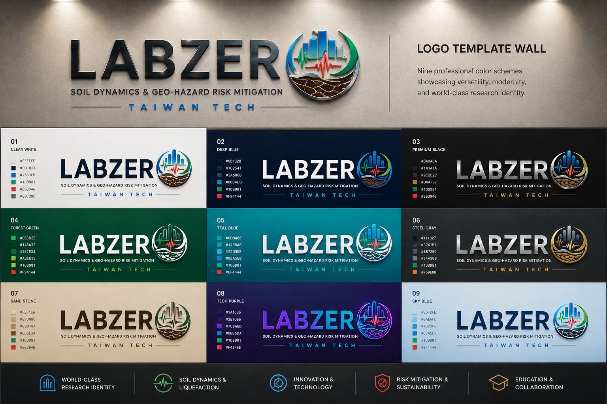

01
Building–soil interaction

Effective stress analysis of shallow-founded buildings in liquefiable soils under long-duration and sequential earthquakes.
LABZero is a geotechnical earthquake engineering laboratory at National Taiwan University of Science and Technology, dedicated to advancing soil behavior, liquefaction engineering, site investigation, piled foundation, numerical modeling, and risk-informed mitigation of geo-hazards.


Soil dynamics, liquefaction engineering, numerical modeling, and geo-hazard mitigation with international collaboration and real engineering impact.
Professor, Division of Geotechnical Engineering, Department of Civil and Construction Engineering, National Taiwan University of Science and Technology.
Major fields include soil dynamics, liquefaction mitigation, three-dimensional effective stress analysis, and pile–soil–superstructure interaction.
Courses include Soil Dynamics and Integrated Design Practice for Civil Engineering, connecting fundamentals, computation, field cases, and design thinking.
E2-409｜cwlu@mail.ntust.edu.tw｜+886-2-2737-6563
Taipei, Taiwan

We do not only analyze hazards. We translate science into decisions.
LABZero connects laboratory testing, theoretical modeling, numerical simulation, seismic signal interpretation, site investigation, and municipal-scale risk evaluation to support safer infrastructure and more resilient cities.
LABZero was founded to solve geotechnical problems both theoretically and practically, disseminate techniques to those in need worldwide, expand members’ geotechnical knowledge, integrate geo-brains for society, and strengthen the credibility of geotechnical engineers.
Every research question moves between analytical thinking, laboratory or field evidence, and practical engineering decision-making.
LABZero aims to prevail its techniques to engineers, agencies, and researchers who need advanced geo-hazard assessment and mitigation tools.
The laboratory integrates local and international perspectives to turn soil dynamics, liquefaction engineering, and risk analysis into social value.
Each pillar integrates mechanisms, evidence, modeling, and design-oriented interpretation.
Effective stress analysis of shallow-founded buildings in liquefiable soils under long-duration and sequential earthquakes.

Analytical models for liquefaction-induced uplift using variable viscosity and thixotropic-fluid concepts.

Cyclic triaxial testing, model calibration, and elemental simulation for liquefaction behavior.

Supplementing JRA-style simplified methods with cyclic testing and Taiwan-specific geological evidence.

Grid-type improved walls, shear stress reduction, replacement ratio, numerical modeling, and design-oriented simplified assessment.
From city-scale liquefaction investigation to advanced numerical modeling and early-warning indicators.
A research portfolio spanning Computers and Geotechnics, Soil Dynamics and Earthquake Engineering, KSCE Journal of Civil Engineering, Advances in Civil Engineering, and other SCI/EI outlets.
LABZero’s identity is the integration of field evidence, laboratory testing, theory, computation, and decision support.
LABZero opened in August 2020 with only two students. Its first support from the Soil and Water Conservation Bureau became the starting point for rapid growth, larger research funding, international visitors, field trips, and a strong alumni culture.
The name LABZero reflects a philosophy: begin from zero, build discipline, and turn small beginnings into world-class research capacity.
LABZero has hosted international students, Kyoto University visitors, field trips, farewell gatherings, monthly meetings, and research activities beyond graduation.
Graduated members remain part of the laboratory identity. Their names, contributions, and spirit are remembered by junior students.
We welcome disciplined, curious, and team-oriented students and collaborators who want to transform geotechnical earthquake engineering into practical resilience solutions.